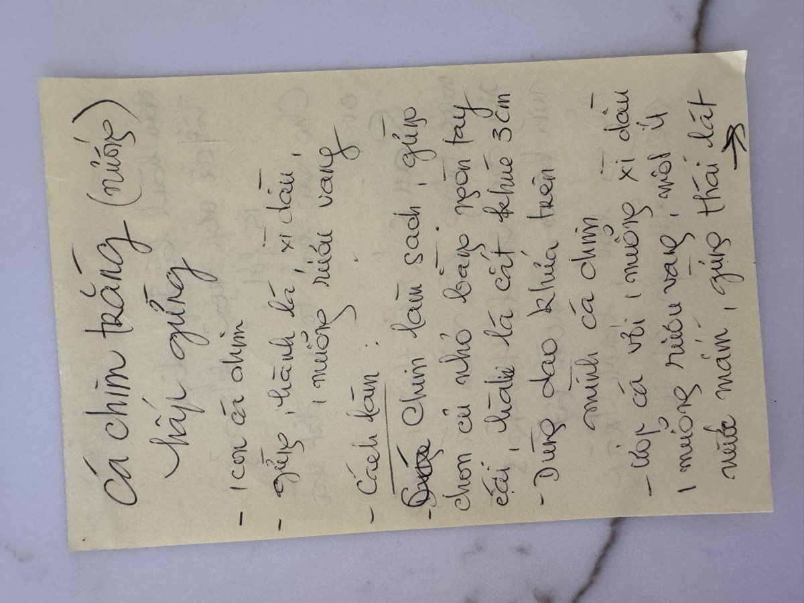

← Back to recipes
Cá Chim Trắng Nướng
Grilled White Pomfret
From Mẹ — Oanh
Nguyên liệu · Ingredients
Nước chấm · Dipping Sauce
- Fish sauce (nước mắm)
- Lemongrass (sả), finely minced
- Fresh chili peppers (ớt), finely chopped
- Garlic (tỏi), minced
Để ăn kèm · To Serve
- Rice vermicelli (bún)
- Rice paper (bánh tráng)
- Fresh herbs and lettuce
Cách làm · Instructions
- Score the pomfret with 3 diagonal cuts on each side — this lets the marinade soak deep into the flesh and helps it cook evenly.
- Marinate the fish with soy sauce, cooking wine, ginger, and scallion pieces. Let it sit for about 15 minutes.
- Place the fish in a large oven-safe dish and put in the oven.
- After 5 minutes, drizzle 1 more spoon of soy sauce over the fish. Bake for another 5 minutes or until the fish is cooked through.
- Make the dipping sauce: mix fish sauce with lemongrass (sả), chili (ớt), and garlic (tỏi).
- Serve with rice vermicelli (bún), rice paper (bánh tráng), and the dipping sauce.
Công thức gốc · Original handwritten recipe

❦
A recipe from Mẹ's kitchen